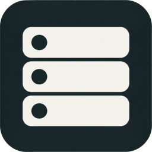
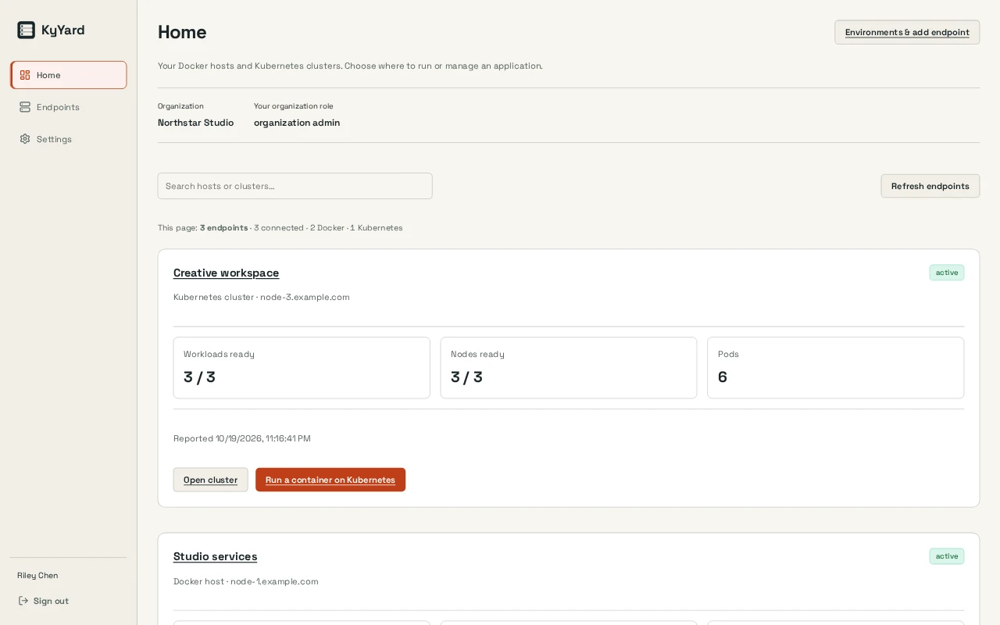

See and operate containers
Inspect state and resource use, read logs, and start, stop or recreate containers. Image and deployment operations stay in the same console with access checks and audit records.

KyYard / Infrastructure
Manage local and remote containers, inspect logs and resource use, and connect Docker hosts and Kubernetes clusters from one console.
Open source (MIT) · TestedScreenshots
Example screens from local builds with fictional data. Appearance varies by version.

Inside KyYard
Inspect state and resource use, read logs, and start, stop or recreate containers. Image and deployment operations stay in the same console with access checks and audit records.
The default install discovers Local Docker automatically. Enroll additional Docker hosts and Kubernetes clusters with the documented agent and approval workflow.
Use local accounts and MFA or optional KyIdentity sign-in. Configure sealed backups for KyYard’s own state; managing a host does not back up that host’s applications automatically.
How it fits together
The mounted Docker socket gives KyYard host-level authority. Limit access to the console and follow the proxy and agent requirements. Suite-wide installation management needs a separate KyQuickStart runner handoff; it is not enabled by connecting Docker alone.
Read the Busnes.app privacy policy. For data on an independently operated installation, contact its operator.
Next step
The project documentation is the place for current requirements and instructions.